Windowsでgpedit.mscを実行すると、ローカルグループポリシーエディターが開きます。これはWindowsのMMC（Microsoft Management Console）で、ユーザーがシステム設定にアクセスし、変更することができます。
残念ながら、グループポリシーエディタは、WindowsのProおよびEnterpriseエディションでのみ利用可能です。ProおよびEnterprise以外のWindowsエディションでgpedit.mscコマンドを実行しようとすると、Windowsは「gpedit.mscが見つかりません」というエラーメッセージを出します。
Pro版またはEnterprise版をインストールすることで解決しますが、ローカルグループポリシーエディターをサポートしていないWindows版でもgpedit.mscを実行するための回避策があります。
グループポリシーコマンドの有効化
ローカルグループポリシーをサポートしていない特定のWindows Editionを使用している場合、特定のコマンドを使用して有効にすることもできます。
注：現在のWindowsエディションは、Windows設定＞システム＞詳細情報＞Windows仕様から確認することができます。

コマンドは、Microsoft Windows Group Policy Client ExtensionsとClient Tool Packageをダウンロードし、OSのルートフォルダにインストールします。このパッケージは、オンラインのWindowsイメージファイルから取得します。
こうすることで、GPeditを実行するために必要なファイルをCドライブのルートフォルダにインストールすることができます。
１．Github Repositoryにアクセスして、gpedit-enablerスクリプトを入手します。
２．1行目から8行目までのコードをコピーしてください。
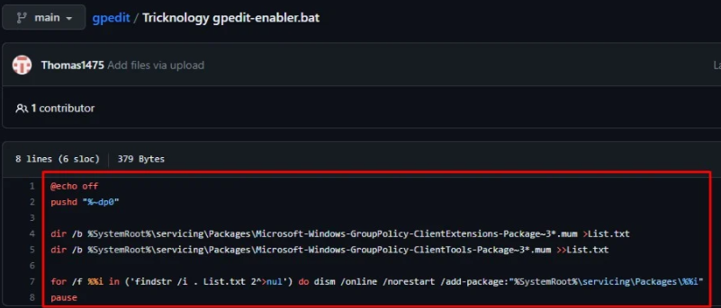
３．メモ帳を開きます。
４．先にコピーしたコマンドを貼り付けます。
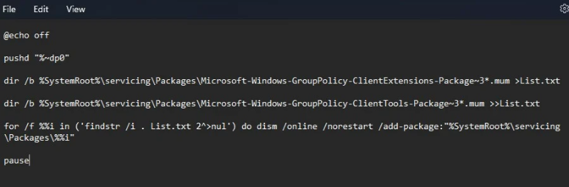
５．ファイルを保存し、保存種類を[すべてのファイル]とし、名前をgpedit.batにします。
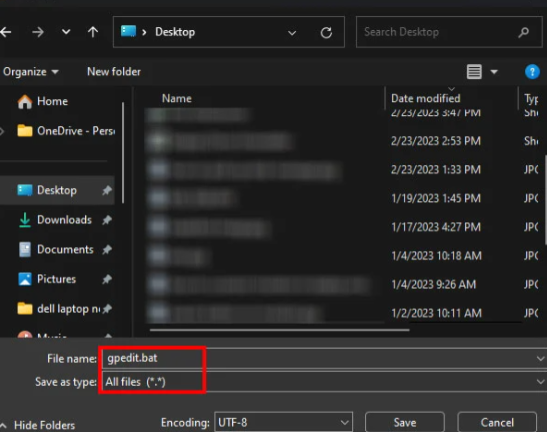
６．このファイルをAdministratorとして実行します。
７．batファイルがすべてのコマンドを実行するのを待ちます。
８．処理が完了したら、いずれかのキーを押してください。
または、以下のステップでローカルグループポリシーエディターを有効にすることもできます。
１．Windows + Rキーを押して「ファイル名を指定して実行」を開きます。
２．cmdと入力し、Ctrl + Shift + Enterキーを押して、管理者としてのコマンドプロンプトを開きます。
３．次のコマンドを入力し、Enterキーを押します。
FOR %F IN ("%SystemRoot%\servicing\Packages\Microsoft-Windows-GroupPolicy-ClientTools-Package~*.mum") DO (DISM /Online /NoRestart /Add-Package:"%F")
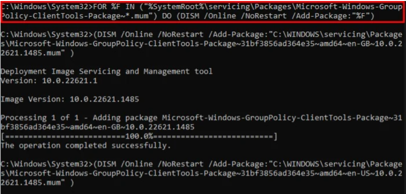
４．コマンドが実行されるのを待ちます。
FOR %F IN ("%SystemRoot%\servicing\Packages\Microsoft-Windows-GroupPolicy-ClientExtensions-Package~*.mum") DO (DISM /Online /NoRestart /Add-Package:"%F")
５．再度、以下のコマンドを入力し、Enterキーを押します。
６．gpedit.mscを開いてみてください。
グループポリシーフォルダをコピーする
上記のコマンドを実行してもうまくいかない場合は、SysWow64からプライマリドライブのルートディレクトリにローカルグループポリシーファイルをコピーしてみるとよいでしょう。すべてのシステムファイルはルートフォルダに保存されているので、グループポリシーファイルのコピーはうまくいくはずです。
１．Windows + Eキーを押して、ファイルエクスプローラを開きます。
２．C:⇄WindowsSysWOW64に移動します。
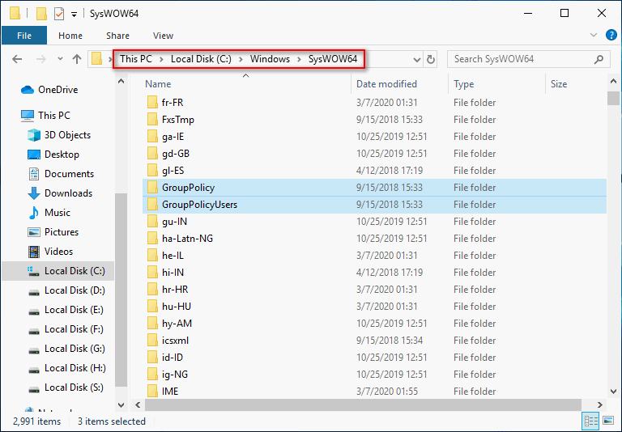
３．以下のファイルとフォルダーをコピーします：
GroupPolicy
GroupPolicyUsers
gpedit.msc
４．C:⇄WindowsSystem32の中に貼り付けます。
５．ファイル名を指定して、gpedit.mscと入力し、グループポリシーエディターを開くことができるかどうかを確認します。
SFCおよびDISMコマンドを実行する
Pro版やEnterprise版を使用していても、グループポリシーエディターを開くことができない場合がある。このような合併症は、システムファイルのエラーが原因で発生する可能性があります。
この問題を解決するには、まずDISM（Deployment Image Servicing and Management）コマンドでシステムイメージを修復し、SFC（System File Checker）コマンドでシステムファイルを修復してみてください。
１．ファイル名を指定して実行します。
２．cmd」と入力し、Ctrl + Shift + Enterキーを押して、管理者権限でコマンドプロンプトを開きます。
３．DISM /Online /Cleanup-Image /RestoreHealthと入力し、Enterキーを押します。
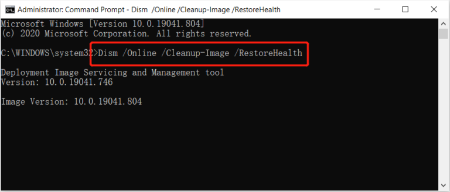
４．コマンドが実行されるのを待ちます。
５．次に、「sfc /scannow」と入力し、Enterキーを押します。
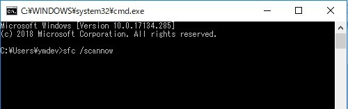
６．スキャン処理が完了するまで待ちます。
７．ローカルグループポリシーエディターを開いてみてください。
エラーで消えたファイルを復元する
システムのエラーで消失したデータや、バックアップなどで保存されていないファイルなどを復元する方法として便利なソフト「データ復元ソフトBitwar］をおすすめします。Bitwarデータ復元ソフトは、Windowsパソコンから失われたファイルと削除されたファイルを3ステップと数分で復元可能です。
Bitwarデータ復元ソフトのメリット
１．様々なエラーでアクセス不能になったドライブからデータを救出することができます。
２．内／外付けHDD、失われたパーティション、USBメモリ、TFカード／SDカードなどのメモリーカード、ごみ箱、クラッシュしたコンピュータなどのデータ復旧をサポートします。
３．削除、フォーマット、RAWなど、さまざまな紛失のケースから高い成功率でデータを救出することができます。
４．写真、ビデオ、ドキュメント、オーディオ、メールなど、1000種類以上のデータのレスキューに対応しています。
５．MacとWindows二つのバージョンがあります。
６．初心者でも使いやすいシンプルな操作画面と機能があります。
７．新規登録者は30日間無料試用できます。
8．スキャンとプレビューは無料です。プレビューできないなら、復元する必要はありません。
まずBitwarデータ復元ソフトをパソコンにインストールしてください。復元したいディスクドライブにインストールしないでください。
ステップ１．ウィザードモードで復元したいデータの保存場所を選択します。
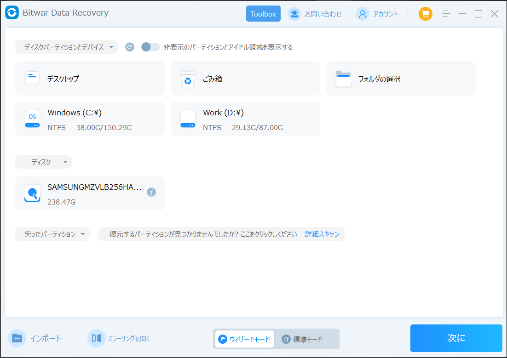
ステップ２．スキャンモードを選択します。まずクイックスキャンを実行してください。フォーマット／初期化によって消えたデータを復元する場合、直接「初期化ファイルの復元」を選択してください。「クイックスキャン」と「初期化したファイルの復元」が復元したいファイルを検出できなかったら、またディープスキャンを実行してみてください。
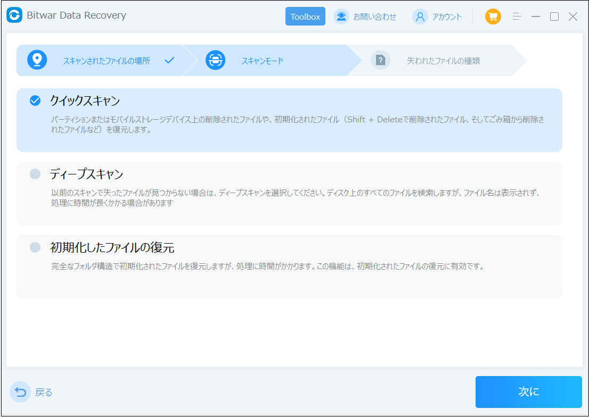
ステップ３．復元したいファイルのデータの種類を選択します。「スキャン」をクリックします。
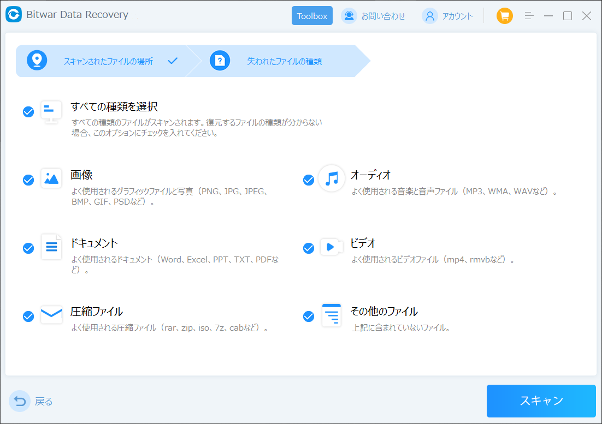
ステップ４．検出されたデータをプレビューすることができます。「復元」をクリックしてデータを他のディスクに復元します。データが上書きされないように、復元したいデータを元の場所に復元しないでください。他のドライブやデバイスに復元するのがお勧めです。復元が完了したら、データを元の保存場所にコピーすることができます。
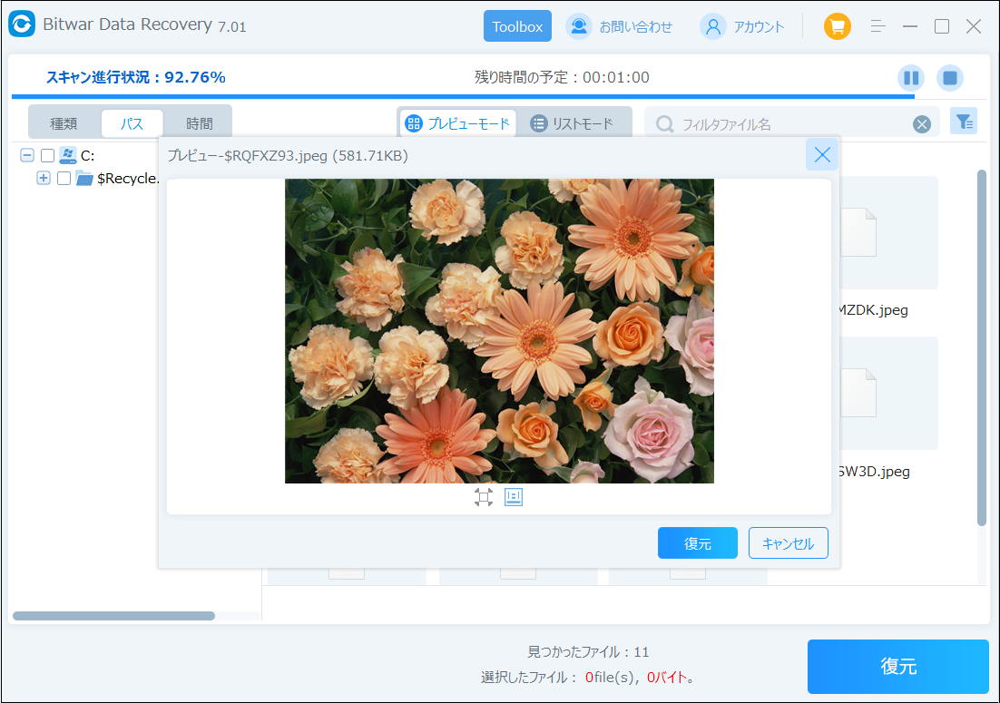
これで、Windowsで「gpedit.mscが見つかりません」という問題を解決することができます。